ANNA ATHINA · B-NOOK-SITE-SUCCESSOR · 2026-09-26
Latest architectural review.
Corrected B garden/sliding-door bays and continuous longitudinal street grade. Service frontage, atrium and accessible ramp preserved. The approved ramp, construction journey and cinematic handover are preserved.
Temporary public human-review copy. Not the production Raysons website. Source drawings and original site photographs are deliberately excluded.
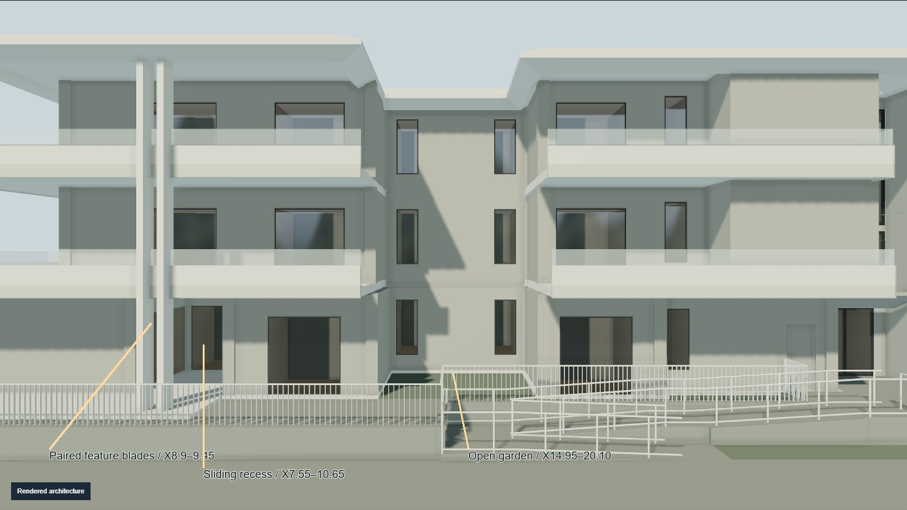
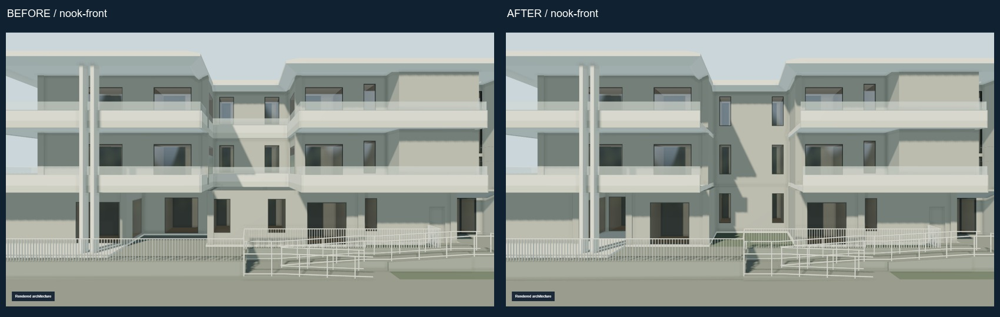
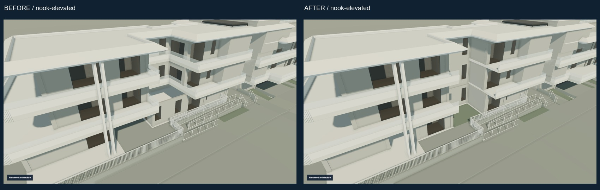
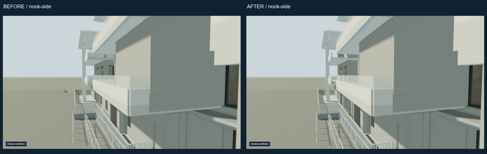
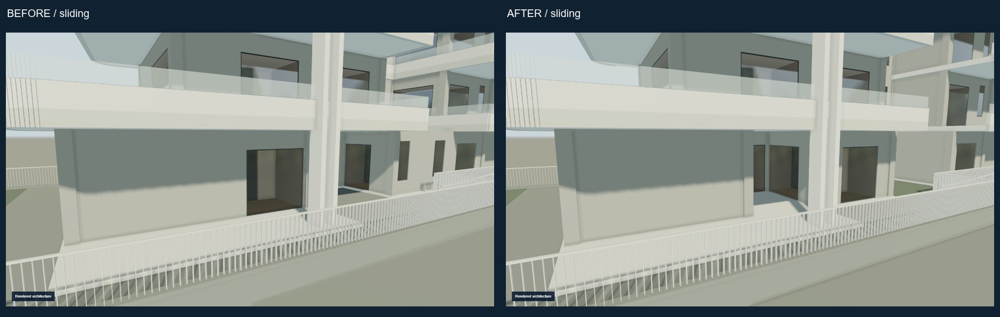
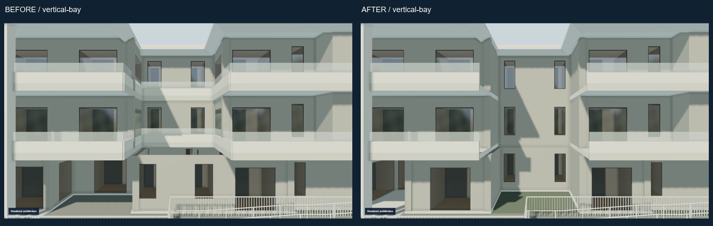
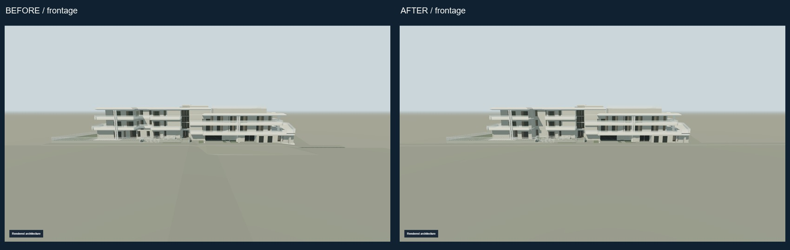
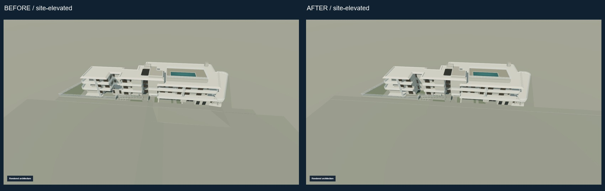
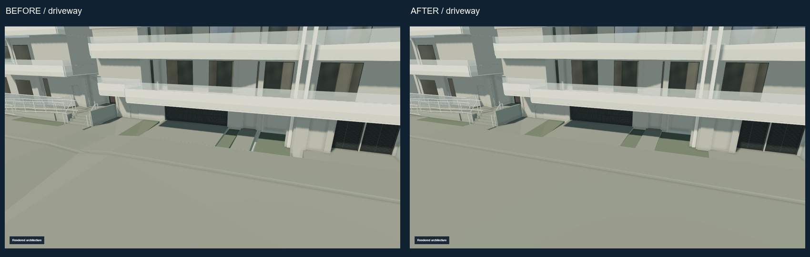
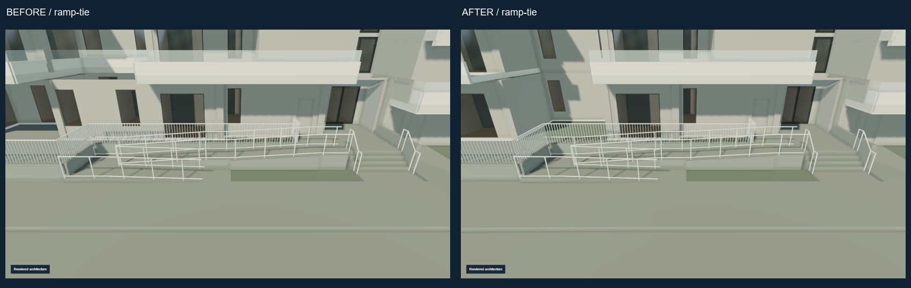


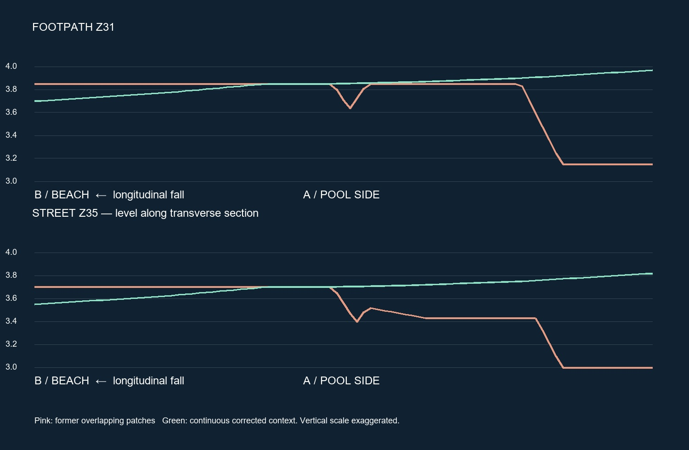
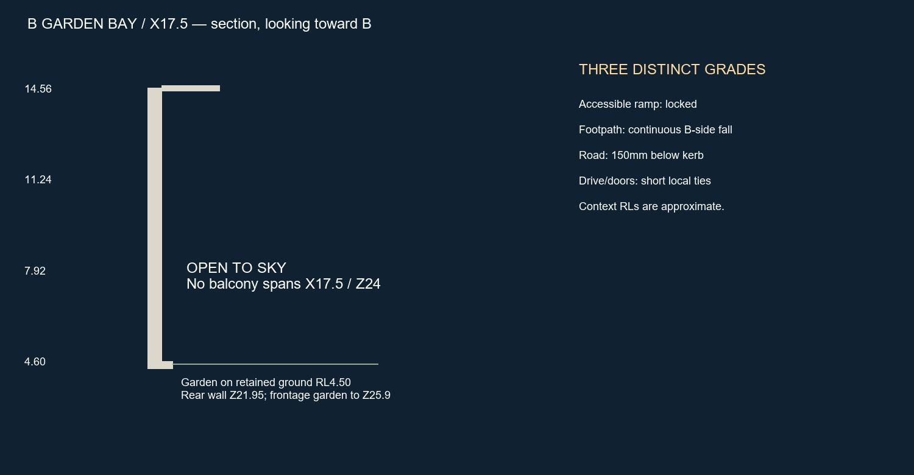
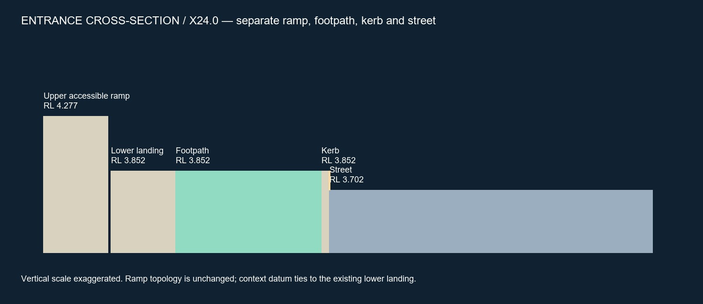

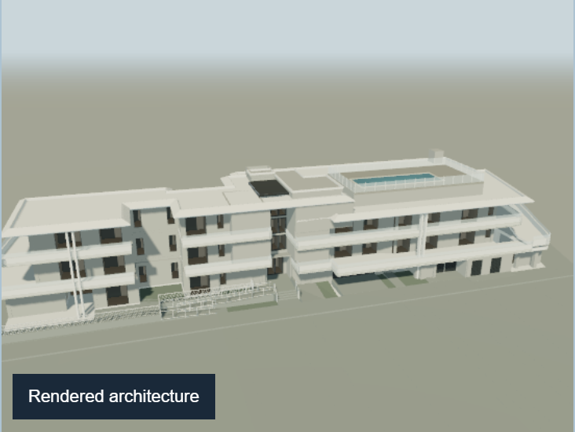